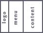

Главная | Оглавление | Словарь
Эту главу мы начнем с небольшого фокуса: замените параметр rows, на cols -
<head>
<title>Хождение по фреймам</title>
<frameset cols="100,150,*">
<frame src="logo.html">
<frame src="menu.html">
<frame src="content.html">
</frameset>
</head>
</html> (прим.)
Ну-ка, посмотрите наш пример. Ловкость рук и никакого мошенства :)
Параметр cols делит окно нашего броузера не на ряды, а на колонки. Давайте переведем это - cols="100,150,*": "...наш документ теперь делится на колонки. Первая колонка имеет ширину - 100 пикселов, вторая - 150, а третья занимает все оставшееся место".
Кстати, мы получили еще один из четырех вариантов, которые собирались сделать:

Итак, подведем итоги. Мы можем делить окно нашего броузера либо на ряды, либо на колонки, с помошью параметров тэга <frameset> Cols и Rows. Другого способа деления не существует. Одновременно эти параметры использовать нельзя.
При помощи rows мы разбиваем окно на ряды и задаем какую высоту будет иметь каждый ряд, при помощи cols разбиваем окно на колонки и задаем какую ширину будет иметь каждая колонка.
Кстати, ширина и высота могут задаваться не только в пикселях, но и в процентах от общей ширины (высоты) окна:
Помните, что в сумме это все должно равняться 100%. А то бывают же умники...